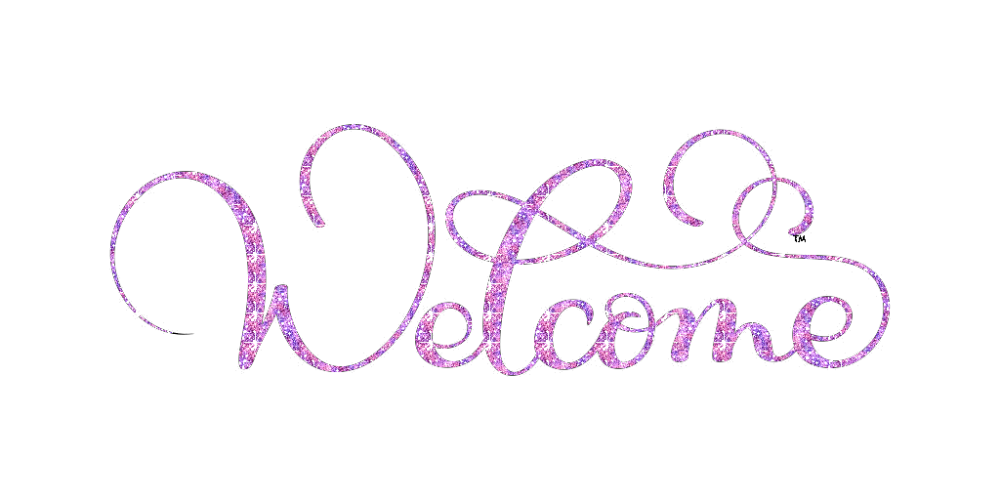

Welkom op mijn website! Wat ben ik toch gelukkig dat u op mijn website zit.
Heeft u intresse in het vak informatica? dan bent u zeker op het goede adress.
U leert hier onder andere wat algemene informatie, binairstelsel, kleurmodellen en bestandsformaten zijn.
